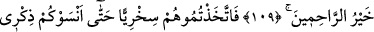
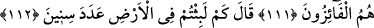
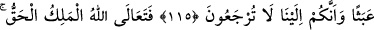
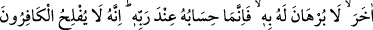
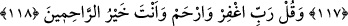

YERYÜZÜNDE
KAÇ YIL KALDINIZ?
109. Zira kullarımdan bir zümre: Rabbimiz! Biz iman ettik; öyle ise bizi affet;
bize acı! Sen, merhametlilerin en iyisisin, demişlerdi.
110. İşte siz onları alaya aldınız; sonunda onlar (ile alay etmeniz) size beni
yâdetmeyi unutturdu, siz onlara gülüyordunuz.
111. Bugün ben onlara, sabrettiklerinin karşılığını verdim; onlar, hakikaten
muratlarına erenlerdir.
112. (Allah inkârcılara) “Yeryüzünde kaç yıl kaldınız?” diye sorar.
113. “Bir gün veya günün bir kısmı kadar kaldık. İşte sayanlara sor” derler.
114. Buyurur: Sadece az bir süre kaldınız; keşke siz (bunu) bilmiş olsaydınız!
115. Sizi sadece boş yere yarattığımızı ve sizin hakikaten huzurumuza geri
getirilmeyeceğinizi mi sandınız?
116. Mutlak hakim ve hak olan Allah, çok yücedir. O’ndan başka ilah yoktur, O,
kerîm Arş’ın sahibidir.
117. Her kim Allah ile birlikte diğer bir ilaha taparsa, -ki bu hususla ilgili hiçbir
delili yoktur- o kimsenin hesabı ancak Rabbinin nezdindedir. Şurası muhakkak ki
kâfirler iflah olmaz.
118. (Rasûlüm!) De ki: Bağışla ve merhamet et Rabbim! Sen merhametlilerin en
iyisisin.